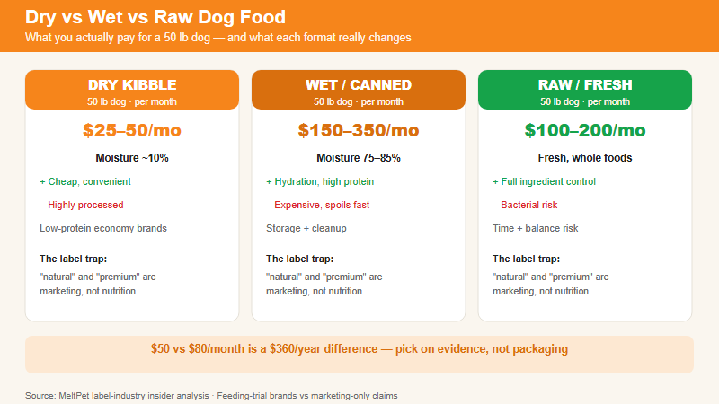

What the labels don't tell you. From someone who worked in pet food. | 2026-06-20 · MeltPet · 6 min read
Last updated: 2026-06-23
I Wrote Dog Food Labels for Five Years. Here's What I Learned.
Pet food marketing is a masterclass in making you feel things. "Ancestral diet." "Human-grade ingredients." "Holistic." "Natural." None of these words are regulated. None of them mean what you think they mean. A food labeled "natural" can still be mostly corn. "Human-grade" has no legal definition in pet food. "Holistic" means whatever the marketing department wants it to mean — which is usually "this bag costs $20 more."
I spent five years working for a mid-size pet food manufacturer. I wrote the copy on the bags and the product pages. I sat in the meetings where we discussed how to position a new formula so it'd command a premium price without actually changing the ingredient panel enough to raise our costs. I'm not here to tell you which brand to buy. I'm here to tell you how to read a label so you can decide for yourself whether you're paying for better nutrition or better marketing.
Kibble: Not Great. Not Terrible. The Baseline.
Dry food is the default for a reason: it's cheap, convenient, and shelf-stable. The extrusion process — cooking ingredients under high heat and pressure — kills pathogens and creates a product that can sit in a bag for 18 months without spoiling. The problem is that extrusion also degrades some nutrients, which is why kibble is sprayed with vitamins and fats after cooking. That greasy coating on the outside of the kibble? That's the nutrient package that got destroyed in processing, re-applied.
What to look for on a kibble bag: an AAFCO statement that says "animal feeding tests using AAFCO procedures" — not just "formulated to meet." Formulated means the recipe looks right on paper. Feeding trials means they actually fed it to dogs and the dogs didn't get sick. The difference matters. A named protein source first — "chicken" or "chicken meal," not "poultry meal" or "meat meal." Named fats — "chicken fat" not "animal fat." And avoid foods where the first ingredient is corn, wheat, or soy. They're not poison. They're just cheap fillers that push the protein percentage up with plant protein instead of animal protein. Dogs can digest plant protein, but they utilize animal protein more efficiently.
Wet Food: Better Hydration, Worse Teeth
Canned food has roughly 75–85% moisture versus 10% in kibble. For dogs who don't drink enough water — and that's most of them — wet food provides hydration that kibble doesn't. Cats especially benefit from wet food because they evolved from desert animals and have a low thirst drive. A cat eating only dry food is mildly dehydrated most of her life.
Wet food is also generally higher in protein and lower in carbohydrates than kibble, because carbs are what give kibble its structure. You can't extrude a meat-only pellet — you need starch to hold it together. Wet food doesn't have this constraint. If you look at the guaranteed analysis, wet food almost always has more protein per dry matter basis than a comparable kibble. The trade-offs: wet food costs more per calorie. It spoils within hours if uneaten. And it doesn't provide the mechanical tooth-cleaning that chewing kibble does — though the dental benefit of kibble is overstated. Most dogs swallow kibble whole without crunching it at all. Neither format replaces brushing.
Raw: The Most Expensive Way to Feed Your Dog. Sometimes Worth It.
Raw feeding advocates make some claims that are supported by evidence — raw diets typically produce smaller, firmer stools and shinier coats — and some that aren't — that raw food "cures" cancer or allergies. The reality is messier than the marketing on either side.
The genuine benefit of raw: you control every ingredient. No preservatives, no fillers, no rendered meals of uncertain origin. The genuine risk: bacterial contamination. Raw meat carries Salmonella, E. coli, and Listeria. These bacteria make dogs sick less often than you'd expect — dogs have shorter, more acidic digestive tracts than humans — but the risk isn't zero, and the bacteria shed in the dog's feces and saliva can infect the humans in the house. If you have young children, elderly family members, or anyone immunocompromised at home, raw feeding is a public health question, not just a nutrition question.
The biggest risk with raw, though, is nutritional imbalance. Throwing chicken breasts and carrots in a bowl is not a complete diet. Dogs need precise ratios of calcium to phosphorus, specific amino acids, vitamins, and trace minerals. Home-prepared raw diets formulated without a veterinary nutritionist are the single biggest cause of nutritional disease I saw in practice — puppies with rickets (rubber bones from calcium deficiency), dogs with thiamine deficiency, dogs with hypervitaminosis A from too much liver. If you're going to feed raw, either buy a commercial raw diet that's AAFCO-complete, or work with a board-certified veterinary nutritionist to formulate a home-prepared diet. Don't guess.
The Real Cost Comparison
Format
Monthly Cost (50lb dog)
Pros
Cons
Economy kibble
$25–$50
Cheap, convenient
Low protein quality, lots of fillers
Premium kibble
$50–$100
Better ingredients, feeding trials
Still highly processed
Wet food (exclusive)
$150–$350
Hydration, high protein
Expensive, spoils
Commercial raw/fresh
$200–$450
Whole ingredients, excellent results
Bacterial risk, budget-breaking
Home-prepared (balanced)
$100–$200
Full ingredient control
Time-consuming, risk of imbalance
The thing I'd tell every dog owner if I could: the best food is the one you can afford consistently that your dog does well on. "Does well on" means good stool quality, healthy weight, shiny coat, normal energy. A dog thriving on premium kibble is better off than a dog with constant diarrhea on a poorly balanced raw diet. Don't let the internet shame you into spending more than your budget allows. Feed the best food you can sustain for the dog's entire life, not the aspirational food you buy for two months before switching back.

What each dog food format actually costs for a 50 lb dog — and what the label really means.
Why AAFCO Approval Isn't a Gold Standard
The AAFCO statement on a bag of dog food — "formulated to meet AAFCO nutrient profiles" or "animal feeding tests using AAFCO procedures" — is a baseline, not an endorsement. There are two paths to an AAFCO statement, and they are not equal.
"Formulated to meet" means the recipe was checked against a spreadsheet — the manufacturer ran the numbers and the nutrient percentages met the minimums. No dog ever ate the food during testing. This is the easier, cheaper, and vastly more common path. It guarantees the food won't cause obvious deficiency disease in the short term. It says nothing about ingredient quality, digestibility, or long-term health outcomes.
"Animal feeding tests using AAFCO procedures" means actual dogs ate the food for 26 weeks under observation — weight tracked, blood work drawn, stool quality monitored. This is the gold-standard path, and shockingly few brands do it. Look for this exact phrase on the label. If it says "formulated" without "feeding tests," the food has never been fed to a dog before landing on the shelf.
AAFCO also sets minimums, not optimal ranges. Meeting the minimum for zinc, taurine, or omega-3 fatty acids prevents deficiency disease but does not guarantee the food supports optimal immune function, brain health, or coat quality. The gap between "adequate" and "optimal" is where most marketing claims live — and it's a gap no regulation currently fills. When you evaluate a dog food, the AAFCO statement is the starting line, not the finish.
🛒 Compare prices before you commit: Dog food is a recurring expense — $50 vs $80/month is $360/year. If you're trying a new brand, check prices at Amazon before switching. For raw and fresh diets, the subscription model (The Farmer's Dog, Ollie, Nom Nom) locks you into a monthly spend; buy a trial box before subscribing, and compare the per-pound cost against premium kibble using the table above.
📚 Sources
Association of American Feed Control Officials (AAFCO).Official Publication — Dog and Cat Food Nutrient Profiles.
Freeman, L.M., et al. (2013).Current Knowledge About the Risks and Benefits of Raw Meat-Based Diets. JAVMA.